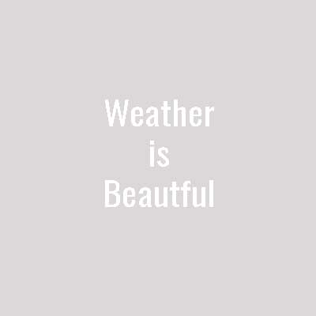

Double lightning stikes near town of Preston as cars whiz by. Isolated
thunderclouds such as this are a rare find. Stay safe outside and
always shelter for 30 minutes after lightning strikes.
Snow as art. The Rocky Mountains get, on average, 30" of snowfall
annually. Snow storms can be some of the most dangerous moutain
weather in the Idaho area. Make sure to be up to date on your winter
safety, but we can all enjoy the peace a fresh snowfall brings.
There's nothing quite like a camping night under the Milky Way. Make
sure to get outdoors this summer and enjoy the awe and wonder of those
bright lights above us!
Hardly anything is more peaceful than a sunrise in the snowy
mountains. This eastward view looking over the Rockies is a rare
perspective indeed.
If you live in Idaho, you know windy switch-back roads. But do you
know them as visual and graphic art? Enjoy these windy roads into your
favorite National Forest into the Rockies.
Rainbows aren't exclusive to the sky after a good storm. On a nice
sunny day, Rainbow Falls puts on a show for its visitors. Rainbow
Falls is a medium-skill hike, about a half day round trip.
Idaho is home to some of the country's best fishing lakes. A beautful
summer day can yield a great fishing crop, or a fun fishing adventure
with the family.
Sporting some of the most colorful skies in the region, West Bluff's
Pointe at sunset is simply magical. Like a unicorn in the sky!
Old county roads getting a make over as the sun rises behind Captain
Jack table top mesa, filling the sky with spanning hues of pink and
purple.